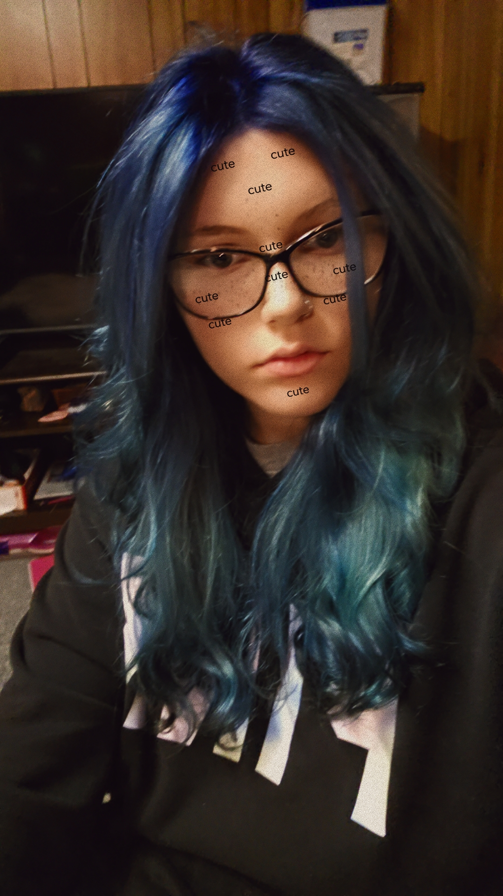

I took art classes because I started watching anime in like 8th grade. I noticed all the details in the anime, started drawing the characters, and got better as time went on. Doing that, I realized I wanted to explore more forms of art, even though my favorite is drawing. I have been trying to incorporate color into my drawings, but I find shading easiest. I have been improving in my art, and I quite enjoy drawing overall. I did take 2D art in middle school- like drawing and painting, but I wanted to explore. I hope to learn to express my emotions through art, such as drawing and painting. I'm also hoping my art skills will help me in the future with making websites.